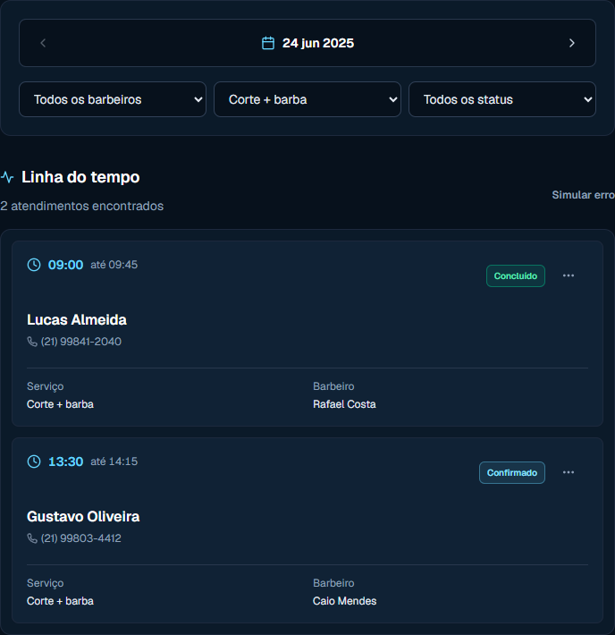
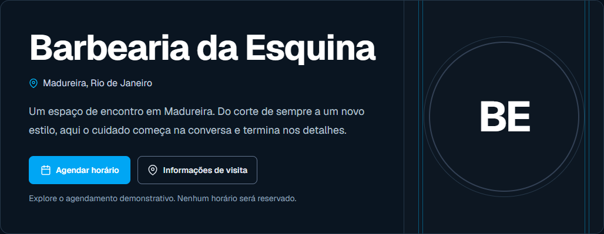
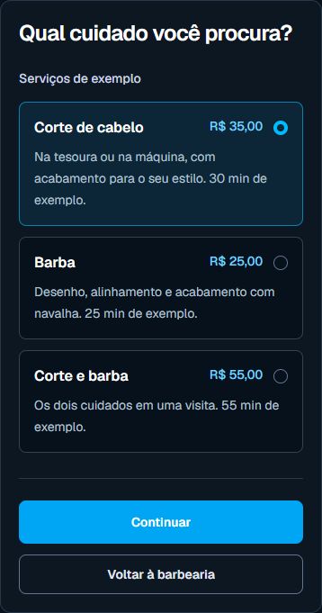
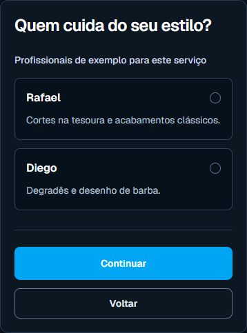
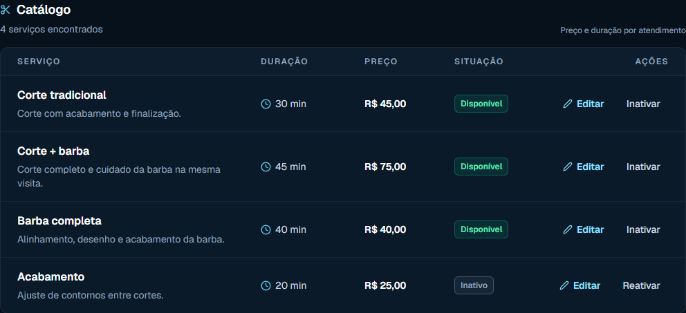
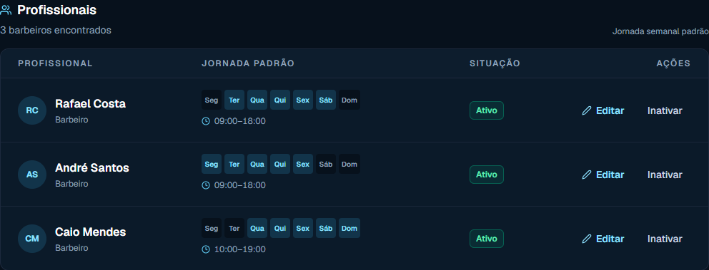
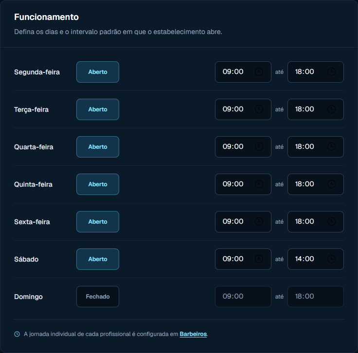

Sua barbearia
apresentada.Sua agenda
organizada.
Uma página para os clientes conhecerem sua barbearia. Um lugar para organizar os serviços, a equipe e os horários.
Experimentar configuraçãoExplore a demonstração. Ela não cria conta,
contrata um plano ou publica uma barbearia.


A barbearia.
Antes do
agendamento.
O cliente encontra sua apresentação, os serviços, a equipe e as informações de visita no perfil público.
É a porta de entrada para conhecer a barbearia e começar a escolha do horário.
Ver exemplo de barbeariaUma escolha
de cada vez.
O agendamento conduz o cliente pelas escolhas, sem perder de vista o serviço selecionado.
- Serviço
- Profissional
- Data
- Horário
- Revisão
A experiência atual é demonstrativa. Datas e horários são exemplos; nenhum horário será reservado.
Explorar agendamento demonstrativo

A rotina tem
seu lugar.
Veja as telas que organizam a operação: o que a barbearia oferece, quem atende e quando ela funciona.
O catálogo, com cada serviço à vista.
Lista completa da amostra administrativa, com preço, duração, situação e ações existentes.

Os profissionais e seus dias de trabalho.
Lista completa de profissionais do exemplo administrativo, sem alterações.

O funcionamento, de segunda a domingo.
A seção real de configuração, com todos os sete dias e os intervalos de abertura.

As amostras administrativas, o perfil público e o agendamento são independentes. Alterar uma demonstração não atualiza as outras.
Um ensaio antes
de colocar no ar.
Experimente o onboarding existente com um exemplo de cadastro ou um convite fictício. Você percorre a configuração e entende o que falta em cada etapa.
Experimentar configuraçãoOs dados ficam em memória e são descartados ao sair ou recarregar.
- 1
Configure
Nome e localização, endereço público pretendido, serviço, profissional e funcionamento.
- 2
Confira o checklist
Revise os requisitos mínimos e retorne às etapas que precisam de ajustes.
- 3
Conheça a liberação
A publicação futura exige configuração mínima e compra confirmada ou liberação explícita do superadmin.
Completar a demonstração não publica uma barbearia nem concede acesso real.
Um único plano para sua barbearia.
R$40/mês
por barbearia
Funcionalidades previstas para o MVP
- Perfil público
- Serviços
- Equipe
- Funcionamento
- Agenda
- Agendamentos
Contratação ainda indisponível
O preço está definido. As operações reais dependem de integração.
A demonstração não contrata um plano.
O que você precisa saber.
O que é o BarberHub?
É um sistema para apresentar a barbearia aos clientes e organizar serviços, equipe, funcionamento, agenda e agendamentos. Hoje você pode conhecer suas interfaces e demonstrações locais.
O que posso experimentar agora?
A configuração demonstrativa e o agendamento de exemplo. As telas usam dados fictícios em memória; não criam conta, acesso, estabelecimento ou reserva real.
Completar a configuração publica minha barbearia?
Não. O checklist apresenta requisitos mínimos. A publicação futura exige configuração e compra confirmada ou liberação explícita do superadmin, além da integração ainda pendente.
Quanto custa? Já posso contratar?
O plano aprovado custa R$ 40/mês por barbearia e contempla o escopo previsto para o MVP apresentado nesta página. Contratação ainda indisponível.
Criar conta já funciona?
A ação abre a apresentação de cadastro existente. O acesso com Google ainda está indisponível; escolher um perfil não cria conta nem concede permissões.
O exemplo de agendamento reserva um horário?
Não. Serviços, profissionais, datas e horários são demonstrativos. Disponibilidade real, prevenção de conflitos e reservas persistidas dependem do backend.
Conheça por dentro.
Comece pela configuração.
Uma demonstração, sem contratação ou publicação real.
Procurando uma barbearia? Explorar catálogo demonstrativo